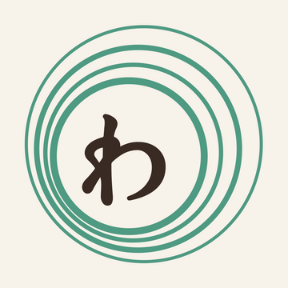

毎日通る道にも、まだ扉を開けたことのないお店があります。
ぐるり ひばりヶ丘は、そんなお店をひとつずつ紹介しているページです。
紹介文は、お店の方からいただいた言葉をそのまま載せています。店先で少しお話を聞くような気持ちで、読んでみてください。
お店の情報は毎月更新し、あたらしく加わったお店もご紹介しています。
カフェのとなりに、かばん屋さん。花屋さんのとなりに、フォトスタジオ。業種や市の境目にとらわれず、近くの気になるお店を並べています。
訪れた方が、心から楽しんでくださること。
その時間が、お店の力になり、
まちの潤いにつながっていくこと。
ぐるりが目指しているのは、そんな景色です。
いつもの道も、はじめての道も、ちょっと楽しくなるように。
載っているお店は、これからも少しずつ増えていきます。次の寄り道を、楽しみにしていてください。
地域の学校やお店と一緒に、まちで過ごす時間がもっと楽しくなる企画も考えています。
地域メディア
ひばりヶ丘を拠点に、地域の人と技を伝えています。ぐるりでは、ウェブページの運営とお店とのやりとりを担当しています。
西武線沿線のカフェ紹介
西武線沿線のカフェを巡り、Instagramで紹介しています。ぐるりでは、SNSの運用と広告を担当しています。

ぐるりは、人と地域に目を向けたページです。人と技に目を向けたページが、「わざのひと」です。ひとつの技に向き合っている方たちを、その技とともに紹介しています。